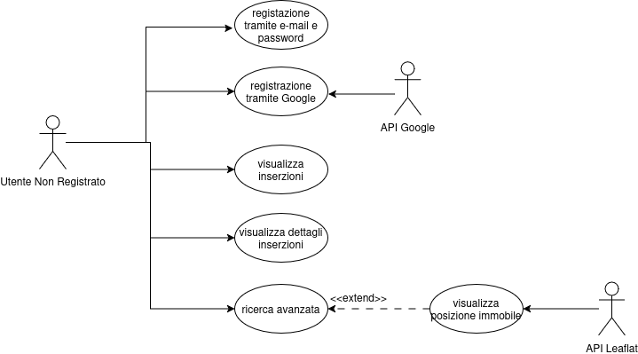
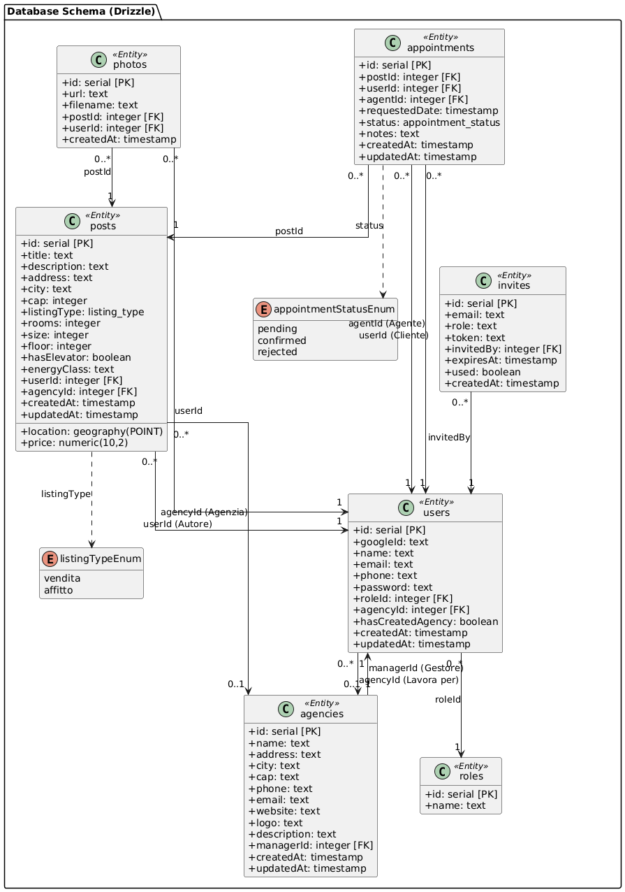

DietiEstates25
Sistema Distribuito per la Gestione Immobiliare Cloud-Native
Corso
Ingegneria del Software
A.A. 2024/2025
Gruppo 041
Gennaro Ventrone
Mariano Sommella
Analisi dei Requisiti
Specifica formale degli attori, vincoli qualitativi e regole di business.
Identificazione degli Attori
Requisiti Non Funzionali
- Paradigma OOP: Modularità e manutenibilità del codice
- Prestazioni: Tempo di risposta <2s (99% query)
- Usabilità: UI intuitiva, Human-Centered Design
- Sicurezza: Protocolli sicuri per credenziali e dati sensibili
- Affidabilità: SLA 99% uptime mensile
Requisiti di Dominio
- • Invitation-Only: Registrazione ruoli privilegiati tramite link univoco via email
- • Conformità Normativa: Classe energetica obbligatoria (D.Lgs 192/2005)
- • Notifiche Proattive: Aggiornamenti automatici stato appuntamenti
- • Supporto Decisionale: Integrazione mappe interattive e previsioni meteo
Accessibilità
Utilizzo immediato senza formazione pregressa
Piena operatività con training minimo
Metriche di Qualità
Attori e Casi d'Uso
Distinzione architetturale tra flussi pubblici e aree protette.
Area Pubblica (Customer)
Accesso anonimo per ricerca e visualizzazione. Registrazione richiesta solo per interazioni (Prenotazione visite, Messaggistica).
Area Staff (RBAC)
- Admin: Gestione Agenzia e Staff.
- Manager: Supervisione inserzioni e reportistica.
- Agent: Operatività quotidiana (Appuntamenti, Immobili).
Gerarchia Privilegi


Architettura Logica
3-Tier Distributed Architecture
Presentation Layer
Single Page Application (SPA) Angular 20.
Client-side rendering, Lazy Loading.
Application Layer
REST API Stateless (Node.js + Express v5).
Container Dockerizzato, Scalabilità orizzontale.
Data Layer (Hybrid-Cloud)
PaaS NeonDB (Serverless Postgres) + AWS S3.
ACID Compliance + Scalable Blob Storage.
Architettura Backend & Stack Tecnologico
Struttura 3-Tier con Tecnologie Type-Safe e Design Pattern Consolidati
REST API Stateless
Client: Angular SPA disaccoppiata
Server: Express Business Logic
Hybrid Cloud
3-Tier Architecture
Design Patterns
Disaccoppia DB da logic
Auth modulare (Passport.js)
API Routes unificate
Middleware pipeline
Core Technologies
Superset JavaScript con tipizzazione statica. Previene errori a compile-time.
Framework web minimale per Node.js. Gestione routing e middleware.
Libreria validazione schema TypeScript-first. Runtime type checking.
ORM TypeScript-first, zero-overhead. Query type-safe, migrazioni automatiche.
RDBMS open-source ACID-compliant. PostGIS aggiunge supporto geospaziale.
Infrastructure & Services
PostgreSQL serverless PaaS. Auto-scaling, branching database, cold start <1s.
Object storage scalabile. 99.999999999% durability. CDN-ready.
Middleware autenticazione Express. 500+ strategie (Local, OAuth, JWT).
Hashing password con salt. Protegge da rainbow table attacks.
Invio email transazionali via SMTP. Supporto template HTML.
Containerizzazione app. Multi-stage build per ottimizzare immagini.
Frontend Engineering
Architettura Client Angular 20 & State Management.
Component-Based Architecture
Adozione completa di Standalone Components. Eliminazione di NgModules per ridurre boilerplate e migliorare il Tree-shaking.
Reactive Programming (RxJS)
Gestione asincrona tramite Observer Pattern. Uso di Pipeable Operators per trasformazione flussi dati.
Service-based State Management
Uso di BehaviorSubject come "Single Source of Truth" per lo stato utente, evitando la complessità accidentale di Redux/NgRx per questo scope.
Servizi Esterni & Integrazioni
Orchestrazione di servizi specializzati per funzionalità avanzate.
-
PostGIS (Database Extension)
Motore geospaziale nativo. Utilizzo della funzione ST_DWithin per query di prossimità su coordinate sferiche (WGS 84).
-
Leaflet & OpenStreetMap
Libreria client-side per mappe interattive. Rendering dei marker immobiliari e gestione eventi geospaziali su tile server OSM.
-
OpenMeteo API
Integrazione REST per dati meteorologici real-time. Arricchisce l'UX in fase di prenotazione visita.
-
Nodemailer (SMTP)
Gestione asincrona delle notifiche transazionali (Conferma registrazione, Update appuntamenti).
Persistenza dei Dati
Schema ER & ORM Strategy
Il layer di persistenza è gestito tramite Drizzle ORM, scelto per la sua natura "Type-safe" e "Zero-overhead" rispetto a soluzioni più pesanti come TypeORM o Prisma.
- Definizione dello schema in TypeScript (Single Source of Truth).
- Migrazioni SQL automatiche.
- Integrità referenziale rigorosa (Foreign Keys).
La relazione Agency (1) ↔ (N) Agent è centrale per il sistema RBAC, vincolando ogni operazione dell'agente al contesto della sua agenzia.

DevOps & Quality Assurance
GitHub: Versioning & CI/CD
Piattaforma centralizzata per controllo versione distribuito (Git) e automazione completa del ciclo di sviluppo.
Esecuzione automatica su ogni Push/PR. Merge consentito solo con tutti gli stage verdi.
SonarQube: Analisi Statica Continua
Scansione automatica del codice per monitorare debito tecnico e garantire Clean Code.
Open Issues
Open Issues
Open Issues
Errori logica → crash runtime. Priorità massima.
SQL Injection, XSS, CSRF. Security critical.
Violazioni best practices (complessità, naming).
Violazione DRY. Solo 1.3% del codebase duplicato.
Docker Multi-Stage Build
Ottimizzazione immagini per portabilità, riproducibilità e sicurezza.
- • Node.js 20 completo
- • Dev + Prod dependencies
- • Compilazione TS → JS
- • Node.js 20-slim
- • Solo prod dependencies
- • Artefatti /dist
Gestione automatica tramite docker-compose.yml
- Container API Backend (porta 5003)
- Container PostgreSQL Database
- Network bridge isolato
Strategia di Testing & Usabilità
Risk-Based Testing
Copertura non uniforme, ma focalizzata sui moduli Core Business critici.
- Unit Testing con Jest.
- Mocking dei Repository per isolare la Business Logic.
- Focus su: Algoritmi di ricerca, Sicurezza RBAC, Metodi distruttivi (deleteAppointment).
Validazione Usabilità
Valutazione tramite System Usability Scale (SUS) e misurazione Time-on-Task.
[INSERIRE GRAFICO RISULTATI SUS]
Istogramma distribuzione punteggi
Conclusioni
DietiEstates25 rappresenta un sistema moderno, type-safe e scalabile, progettato seguendo rigorosi principi di Ingegneria del Software.
Architettura Pulita
Separazione delle responsabilità e pattern consolidati.
Security by Design
RBAC, Validazione Zod e Protezione dati.
UX Curata
Validata empiricamente con utenti reali.